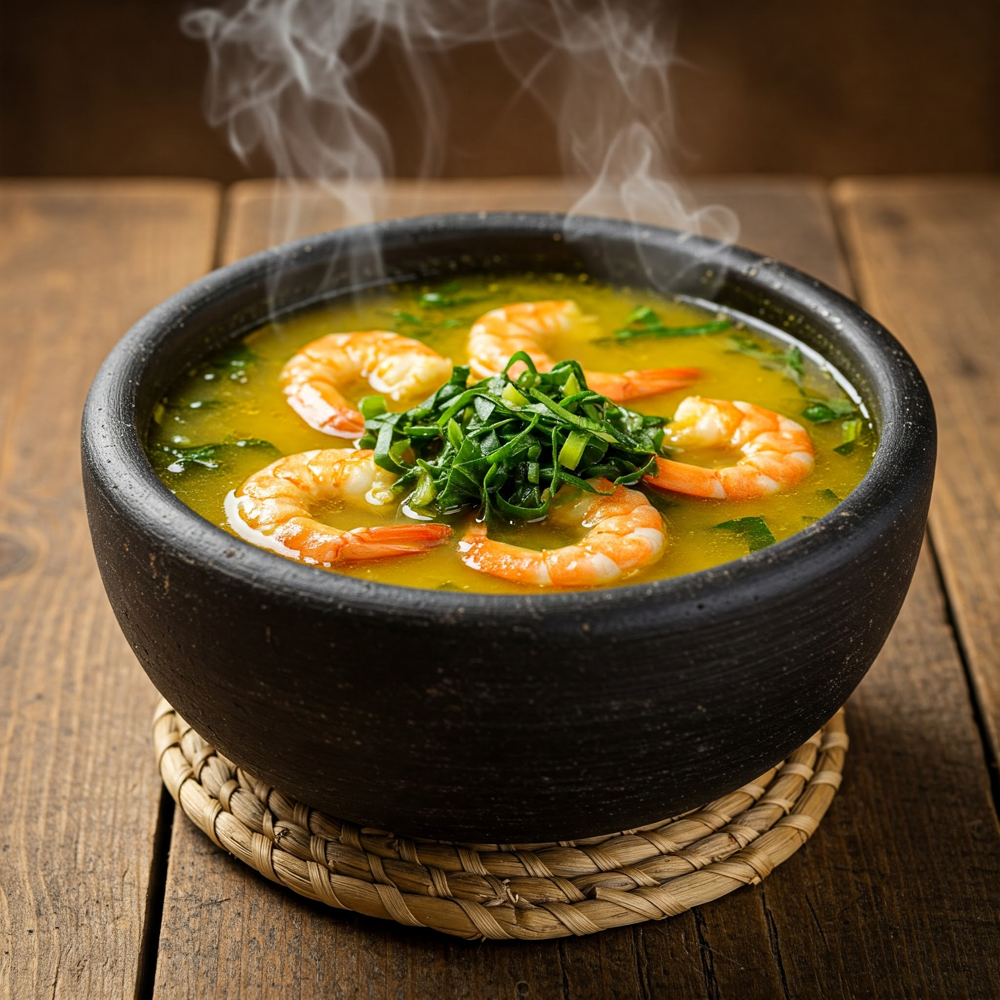
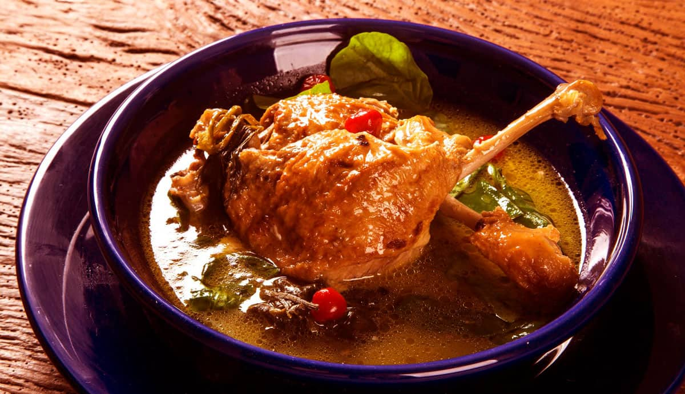
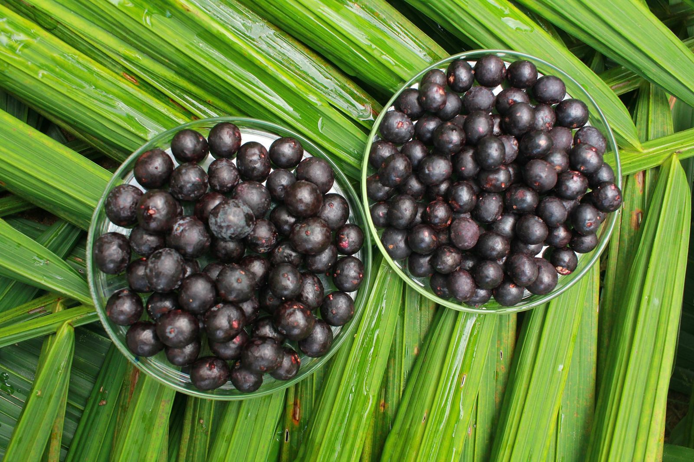

Tacacá
Caldo quente com camarão seco e jambu, típico do Pará.
Ver mais

Pato no Tucupi
Prato amazônico com pato cozido no caldo de mandioca.
Ver mais

Açaí
Fruto da Amazônia servido gelado, cheio de energia.
Ver mais